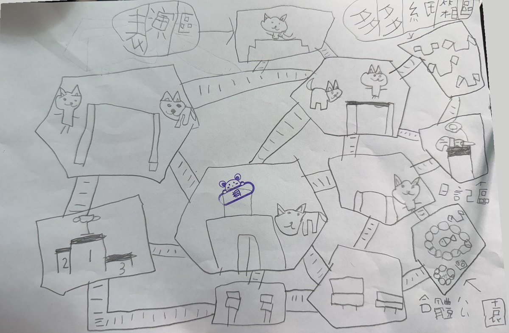

桐桐貓貓島
怎麼玩
- 選一座跳臺點下面的低階、中階或高階跳臺，鏡頭會飛過去。
- 按住大按鈕，放開就跳貓貓走到跳板前面，按鈕變藍色就可以按。
- 能量條要抓時機低階一直按住就會滿；中階和高階的能量條會上上下下，最滿的時候放開跳最高。
- 完美跳會翻跟斗能量條碰到黃色那一段放開，貓貓會在空中翻一圈。
- 排行榜每隻貓只算牠跳最高的那一次。頒獎臺上站的是這次前三名，第一名戴皇冠。
- 表演區點轉圈圈、揮手、翻跟斗、唱歌，臺上的貓就會表演；按拍手，臺下的貓一起拍。
- 日記區貓貓會把今天做的事寫成日記。按貓掌幫日記蓋掌印，按「唸給我聽」就會唸出來。
- 學習島貓貓寫了數學作業（南一版一年級上學期的單元），桐桐當老師按「寫對了」或「寫錯了」；改錯了，戴眼鏡的貓貓老師會提醒你。
- 貓貓教練頭上綁頭帶、用兩隻腳走路。看到晃來晃去、頭上冒「？」的貓，就會叫牠去跳臺跳。
- 累了就休息貓貓會去公園休息、躲進多多紙箱區的紙箱，也會回貓貓之家睡覺。點一下貓貓或紙箱，牠會跟你打招呼。
島主兼設計師：桐桐
這座島照桐桐畫的設計圖做：十一座島的形狀和位置、二十座木板橋，都跟她畫的一樣。第二次她又加了表演區、多多紙箱區、日記區、合體公園，還有貓貓教練；後來又說要一座學習島，放在高階跳臺上面。島上的樹是開白花的油桐樹。
